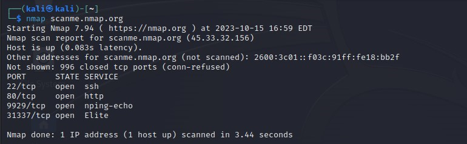
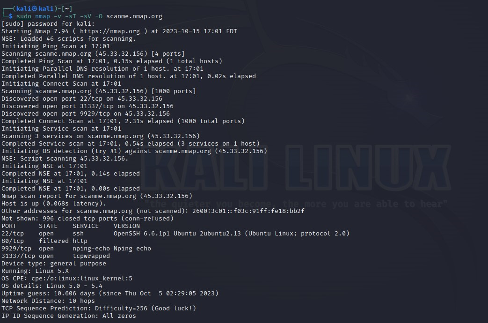
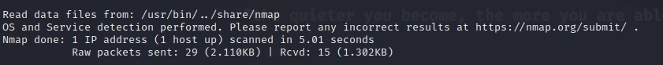

Network Scanning and Security with Nmap
- Host: scanme.nmap.org (45.33.32.156)
- Status: Host is up (0.083s latency).

Open Ports and Services:
- Port 22/tcp (SSH)
- Description: SSH (Secure Shell) protocol for secure remote login.
- Port 80/tcp (HTTP)
- Description: Hypertext Transfer Protocol for web services.
- Port 9929/tcp (Nping Echo)
- Description: Service related to Nping, a network packet generation tool.
- Port 31337/tcp (Elite)
- Description: Port 31337 is open, and further investigation is needed to determine the nature of the service running on this port.


Additional Information:
- IPv6 Address: 2600:3c01::f03c:91ff:fe18:bb2f (not scanned)
- Scan Duration: 3.44 seconds
- Uptime Guess: Approximately 10.606 days (since Thu Oct 5 02:29:05 2023)
- Operating System Details: Linux 5.0 - 5.4 Kernel
- TCP Sequence Prediction Difficulty: 256
- IP ID Sequence Generation: All zeros